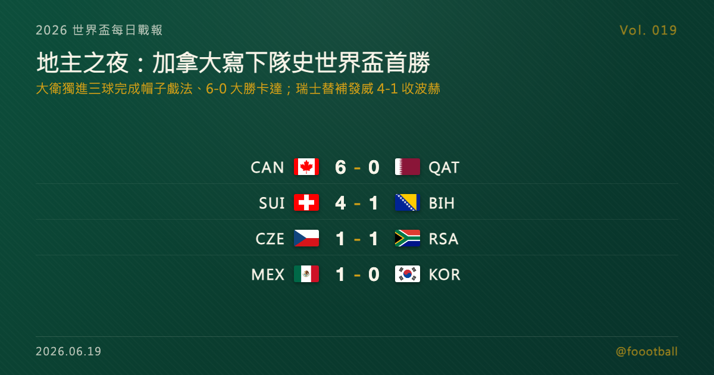

加拿大 6-0 卡達寫下隊史世界盃首勝、大衛獨進三球：B 組地主之夜
2026 世界盃 B 組次輪，地主加拿大 6-0 大勝卡達，拿下隊史世界盃決賽圈首勝。喬納森·大衛獨進三球，成為史上第一位在世界盃完成帽子戲法的加拿大男足球員；這場 6 球大勝也追平了地主球隊在世界盃單場最大勝差的紀錄。同組瑞士則靠替補火力後段爆發、4-1 收下波赫，與加拿大同積 4 分領跑 B 組。

2026 世界盃每日戰報 Vol. 019｜C 小組賽｜A／B 兩組次輪賽果
§1 即時比分戰報
2026 世界盃小組賽次輪打到 A、B 兩組，四場全部結束，而這一夜的主角是地主之一的加拿大。在溫哥華的 BC Place，喬納森·大衛（Jonathan David）獨進三球，成為史上第一位在世界盃完成帽子戲法的加拿大男足球員，率隊 6-0 大勝卡達，為加拿大拿下隊史在世界盃決賽圈的第一場勝利——這也是 6 球大勝，追平了地主球隊在世界盃單場最大勝差的紀錄。同一組的瑞士則在洛杉磯演出後段爆發：替補登場的曼贊比梅開二度、瓦爾加斯也從板凳席改變比賽，隊長扎卡補時操刀點球鎖定勝局，瑞士 4-1 收下波士尼亞與赫塞哥維納，與加拿大同積 4 分領跑 B 組。A 組則是地主墨西哥 1-0 小勝南韓、二連勝提前晉級淘汰賽，捷克與南非 1-1 握手言和。以下是本輪四場賽果：
| 賽事 | 比分 | 場館 | 焦點 |
|---|---|---|---|
| 🇨🇦 加拿大 — 🇶🇦 卡達 | 6 - 0 | 溫哥華 BC Place | 大衛帽子戲法（29'、45+'、92'）、隊史世界盃首勝；拉林 16'、薩利巴 64'、卡達 75' 烏龍；卡達兩紅剩 9 人 |
| 🇨🇭 瑞士 — 🇧🇦 波士尼亞與赫塞哥維納 | 4 - 1 | 洛杉磯 SoFi Stadium | 替補後段爆發：曼贊比替補梅開二度（74'、90'）、瓦爾加斯 84'、隊長扎卡 90+7' 點球；波赫馬赫米奇 90+3' 破門 |
| 🇨🇿 捷克 — 🇿🇦 南非 | 1 - 1 | 亞特蘭大 Mercedes-Benz Stadium | 薩迪萊克 6' 閃電破門、南非莫科埃納末段點球扳平，各取一分 |
| 🇲🇽 墨西哥 — 🇰🇷 南韓 | 1 - 0 | 瓜達拉哈拉 Estadio Akron | 羅莫 50' 把握良機，地主墨西哥二連勝、提前晉級淘汰賽 |
四場分屬 A、B 兩組次輪。B 組在這一晚出現「雙地主」以外的戲劇性：加拿大與瑞士雙雙取勝、同積 4 分把卡達與波赫拉開，兩隊將在最後一輪正面對決決定小組頭名。A 組則由墨西哥提前抽身。§2 是兩組目前的形勢。
§2 排行榜區：A／B 兩組次輪過後形勢
A 組（次輪打完）——墨西哥二連勝、6 分一馬當先，且因其餘三隊最後一輪最多只追到 6 分，墨西哥已確定晉級淘汰賽（32 強）；南韓 3 分暫居次席，捷克與南非各 1 分、靠淨勝球分出先後，末輪仍有翻盤空間：
| # | 球隊 | 賽 | 勝 | 和 | 負 | 進 | 失 | 差 | 分 |
|---|---|---|---|---|---|---|---|---|---|
| 1 | 🇲🇽 墨西哥 | 2 | 2 | 0 | 0 | 3 | 0 | +3 | 6 |
| 2 | 🇰🇷 南韓 | 2 | 1 | 0 | 1 | 2 | 2 | 0 | 3 |
| 3 | 🇨🇿 捷克 | 2 | 0 | 1 | 1 | 2 | 3 | -1 | 1 |
| 4 | 🇿🇦 南非 | 2 | 0 | 1 | 1 | 1 | 3 | -2 | 1 |
B 組（次輪打完）——加拿大與瑞士雙雙拿到 4 分（一勝一和）並列領跑，靠淨勝球分出暫時先後，兩隊末輪直接對話將決定頭名；卡達與波赫各 1 分暫居身後：
| # | 球隊 | 賽 | 勝 | 和 | 負 | 進 | 失 | 差 | 分 |
|---|---|---|---|---|---|---|---|---|---|
| 1 | 🇨🇦 加拿大 | 2 | 1 | 1 | 0 | 7 | 1 | +6 | 4 |
| 2 | 🇨🇭 瑞士 | 2 | 1 | 1 | 0 | 5 | 2 | +3 | 4 |
| 3 | 🇧🇦 波赫 | 2 | 0 | 1 | 1 | 2 | 5 | -3 | 1 |
| 4 | 🇶🇦 卡達 | 2 | 0 | 1 | 1 | 1 | 7 | -6 | 1 |
本屆晉級規則：12 個小組、每組前兩名加上 8 個最佳第三名，共 32 隊晉級淘汰賽。對 A 組的墨西哥而言，兩戰全勝已提前把出線收進口袋；B 組的加拿大與瑞士同樣搶下了有利身位，但兩隊最後一輪正面交鋒，誰是頭名、誰落到次席（甚至牽動最佳第三名的比較），都還沒有定論。至於暫居身後的南韓、捷克、南非、卡達與波赫，小組賽都還剩最後一輪，出線的算盤都還打得響。
§3 賽事摘要
- 加拿大 6-0 卡達：本日最受矚目的一戰，主角是大衛。他在第 29 分鐘以一記凌空抽射首開紀錄，上半場補時再下一城，終場前第 92 分鐘完成帽子戲法，獨力包辦三球——這也讓他成為史上第一位在世界盃單場戴帽的加拿大男足球員。隊長拉林（Cyle Larin）第 16 分鐘率先破門，替補上場的薩利巴（Nathan Saliba）第 64 分鐘建功，加上卡達後衛第 75 分鐘的一記烏龍，加拿大在主場踢出一場 6-0 的勝利，拿下隊史在世界盃決賽圈的第一勝。數據面上，加拿大全場射門 33 比 2，壓制程度幾乎與比分一樣懸殊。美中不足的是，中場科內（Ismaël Koné）在下半場因對方一次嚴重犯規受傷離場，是這個歷史夜晚的一個遺憾。卡達則在下半場連吞兩張紅牌、以 9 人應戰，逆境下難以招架；但他們首戰才剛逼平瑞士、拿下隊史世界盃首分，小組賽也還有最後一輪。
- 瑞士 4-1 波士尼亞與赫塞哥維納：一場「板凳決勝」的比賽。前 70 分鐘兩隊僵持，真正改變戰局的是下半場的換人。瑞士替補曼贊比（Johan Manzambi）第 74 分鐘以一記漂亮的凌空抽射打進個人世界盃首球，第 90 分鐘再添一城梅開二度；同為替補的瓦爾加斯（Rubén Vargas）第 84 分鐘建功，隊長扎卡（Granit Xhaka）則在補時第 90+7 分鐘操刀點球命中。波赫並非沒有亮點——替補登場的馬赫米奇（Ermin Mahmić）第 90+3 分鐘一記精彩攻門攻破瑞士大門，是全場唯一一顆失球；只是面對瑞士替補的衝擊力，最終難挽敗局。對瑞士而言，這是繼首戰被卡達補時逼平後及時收下的關鍵三分；對波赫來說，末輪仍保有一搏的空間。
- 捷克 1-1 南非：A 組的一場平分秋色。捷克由薩迪萊克（Michal Sadílek）第 6 分鐘閃電破門，搶得先機；南非則韌性十足，在比賽末段獲得點球機會，由莫科埃納（Teboho Mokoena）一蹴而就扳平比分。兩隊各取一分，雙雙把出線的懸念帶進最後一輪。
- 墨西哥 1-0 南韓：地主墨西哥的一場小勝。羅莫（Luis Romo）第 50 分鐘把握住一次機會破門，為墨西哥拿下全場唯一進球。憑藉這場勝利，墨西哥二連勝、提前鎖定晉級。南韓則全場與墨西哥周旋到底、僅以一球小負，出線的主動權仍握在自己手上，最後一輪是關鍵之戰。
§4 焦點觀察｜地主之夜：加拿大的第一勝，與一頂遲到的帽子
世界盃史上，能讓一個足球國家「第一次」嘗到勝利滋味的夜晚並不多。對加拿大來說，2026 年 6 月的這一晚，就是那個夜晚。
加拿大的世界盃首勝，來得徹底。 在此之前，加拿大男足在世界盃決賽圈的歷史是一張白卷——1986 年首航三戰全敗未進一球，2022 年卡達世界盃三戰再度小組出局。這一次，作為地主之一回到世界盃，他們不只贏球，還贏得乾脆：6-0，這是加拿大隊史世界盃的第一場勝利，也是 6 球大勝，追平了地主球隊在世界盃單場最大勝差的紀錄（此前同為 6 球勝差的，是 1934 年的義大利、1950 年的巴西與 1978 年的阿根廷）。而把這一切串起來的，是 26 歲的前鋒喬納森·大衛。
📖 完整特刊《地主之夜：大衛的帽子戲法，與加拿大的第一勝》已同步發佈，把這三顆球的解剖、加拿大這一夜寫下的多項紀錄（含 33-2 的射門數懸殊、自 1966 年以來首位地主戴帽者），以及大衛從里爾走向歐洲頂級聯賽舞台、一路成為加拿大史上頭號射手的軌跡，完整講透： 👉 https://foootball.twtools.cc/articles/worldcup-special-2026-06-19-canada-david/
不過，這個夜晚並不全是歡慶。加拿大中場科內（Ismaël Koné）在下半場因對手一次嚴重犯規受傷離場——那次犯規也讓卡達吃到當晚第二張紅牌。一支球隊歷史性的第一勝，與一名球員可能不短的傷停，在同一個晚上發生，是足球時常出現的、五味雜陳的並置。我們也把這份提醒，留在這場大勝的記述裡。
§5 接下來看點
A、B 兩組次輪收官後，兩組的最後一輪都已浮現看點。B 組最值得圈起來的，是加拿大與瑞士的「4 分對 4 分」直接對話——這場下一輪在溫哥華的對決，將直接決定 B 組頭名歸屬，甚至牽動最佳第三名的比較。A 組墨西哥雖已提前晉級，但南韓、捷克、南非之間的次名與出線爭奪，也將在最後一輪見真章。與此同時，本屆其餘小組的次輪賽事也將陸續登場。最新的賽果與形勢，Vol. 020 接著報。
常見問題
Q：加拿大這場 6-0 有多歷史性？ A：這是加拿大男足隊史在世界盃決賽圈的第一場勝利。在此之前，他們 1986 年首次參賽三戰全敗未進球、2022 年也是小組出局。6 球的勝差還追平了地主球隊在世界盃單場最大勝差的紀錄（此前同為 6 球的有 1934 年義大利、1950 年巴西、1978 年阿根廷）。
Q：喬納森·大衛的帽子戲法，創了什麼紀錄？ A：他在第 29、45+、92 分鐘獨進三球，成為史上第一位在世界盃單場完成帽子戲法的加拿大男足球員。大衛本就是加拿大隊史的頭號射手，這三球也是他個人的世界盃首批進球。
Q：B 組現在誰出線了？ A：還沒有定論。加拿大與瑞士同積 4 分（各一勝一和）領跑、靠淨勝球暫分先後，兩隊將在最後一輪直接對決爭頭名；卡達與波赫各 1 分，末輪仍有機會。A 組則是墨西哥二連勝、已提前確定晉級淘汰賽。
Tags: 世界盃, 2026世界盃, 加拿大, 喬納森大衛, 卡達